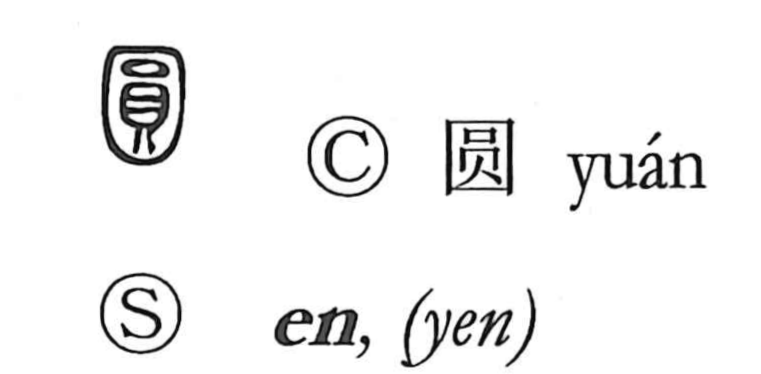

円

Kun: marui, maru, mawari | On: en
circle ・ round ・ yen
Explanation
円 abbreviates 圓, which encloses 員 within an outer boundary. 員 is the phonetic, but it also supplies the older image of roundness: a round 鼎, a ritual tripod vessel.
In 員, the lower part now resembling 貝 is an abbreviated 鼎. The small circle above marks the vessel's round rim. 員 was itself the earlier writing for round.
When 員 acquired other uses, an additional surrounding line distinguished 圓. The word means round, a circle, or its circumference. From a complete, evenly rounded form come smoothness and completeness. The modern 円 preserves the word after a substantial simplification of its older shape.